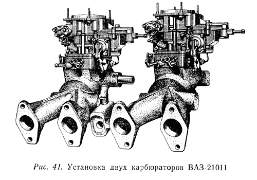

Система питания форсированного двигателя должна обеспечивать повышение мощностных
показателей, автоматическое поддерживание необходимого состава смеси на всех
режимах работы, минимальную инерционность топливовоздушной смеси при быстро
меняющихся нагрузках двигателя, т. е. приемистость и высокую надежность. Особое
значение имеют воздухофильтры, впускные трубы и карбюраторы. Впускная труба
форсированного двигателя должна иметь минимальное сопротивление потоку горючей
смеси. Значит, проходные сечения должны быть достаточно широкими, крутые перегибы
- отсутствовать. Конструкция впускной трубы должна обеспечивать равномерное
распределение смеси по цилиндрам. Обычно впускная труба форсированного двигателя
не имеет подогрева. Это увеличивает весовой заряд воздуха, что способствует
улучшению наполнения. При необходимости применения воздухофильтра он должен
обладать минимальным сопротивлением при высокой степени очистки воздуха. Этому
требованию в большей степени отвечает бумажный элемент воздухофильтра двигателя
ВАЗ-2101. Для уменьшения сопротивления впускного тракта весьма целесообразно
применение двух- и четырехкамерных карбюраторов, которые вполне можно подобрать
на разборке от двигателя соответствующего (или немного большего) рабочего объема
иномарки. Карбюраторы форсированного двигателя должны быть отрегулированы на
обогащенную, рабочую смесь для получения максимальной мощности и в целях снижения
температуры в камере сгорания.
Применение карбюраторов с переменным сечением диффузора позволяет уменьшить
количество переключений передач, так как при низких оборотах двигателя и полностью,
открытой дроссельной заслонке золотник перекрывает часть сечения диффузора и
поддерживает высокую скорость проходящего воздуха. Такие карбюраторы широко
применялись на европейских моделях автомобилей "форд". Поэтому карбюраторы
с постоянным разрежением у распылителя называют также карбюраторами с постоянной
скоростью в диффузоре или с переменным диффузором. Карбюраторы устанавливаются
в середине 1-го и 2-го, а также 3-го и 4-го цилиндров на расстоянии примерно
150 мм от плоскости головки двигателя. Впускная труба может быть выполнена из
двух отдельных симметричных патрубков, соединенных между собой трубкой сечением
12-18 мм. Следует также рассмотреть установку на двигатель М-412 четырех горизонтальных
однокамерных карбюраторов К-194, какие (правда, в ограниченном количестве) выпускал
Ленинградский карбюраторно-арматурный завод. Это карбюраторы с плоским дросселем,
дозирующей иглой и центральной поплавковой камерой и поплавковым механизмом,
снабженным рычажным устройством. Диаметр диффузоров 30 и 32 мм. Они предназначены
для установки на гоночные мотоциклы, но с успехом могут быть применены на форсированном
автомобильном двигателе. Установка четырех однокамерных горизонтальных карбюраторов
не требует сложных впускных патрубков. Их обычно точат на токарном станке в
форме катушки. Остается только сделать конфигурации фланца головки и карбюраторов.
Карбюраторы снабжаются сменными расширяющимися воздухозаборниками (насадками), уменьшающими вихреобразование на входе и позволяющими подбирать длину впускного тракта двигателя в целях оптимального использования колебаний потока горючей смеси для повышения коэффициента наполнения. Как показывает опыт, для форсированного двигателя с рабочим объемом 1,5-1,9 л длина впускного тракта должна быть 250-300 мм.
Хорошие результаты может дать система питания, состоящая из двух карбюраторов 2101 (рис. 41). Карбюратор 2101 вертикальный двухкамерный с последовательным открытием дроссельных заслонок. Главные топливные жиклеры приближены к оси симметрии поплавковой камеры, что обеспечивает хорошую работу двигателя на затяжных виражах. Подвеска поплавка у передней стенки поплавковой камеры предотвращает значительное изменение уровня при отливах топлива на виражах. Большие проходные сечения главных воздушных и топливных жиклеров, а также распылителя позволяют карбюратору быстро реагировать на изменение нагрузки двигателя. Карбюратор снабжен ускорительным насосом диафрагменного типа, подача которого 3-4 см3/10 ходов. Этого для форсированного двигателя явно недостаточно, даже при установке двух карбюраторов. При плавном открытии дроссельных заслонок подача значительно меньше, так как ускорительный насос снабжен перепускным жиклером диаметром 0,45 мм. Так же, как и при установке одного карбюратора на серийную впускную трубу, следует увеличить диаметр форсунки ускорительного насоса до 0,55 мм, что увеличит подачу примерно в 1,5 раза. Карбюратор не имеет привода к вакуум-корректору. Для этой цели можно использовать трубку отсоса картерных газов.
